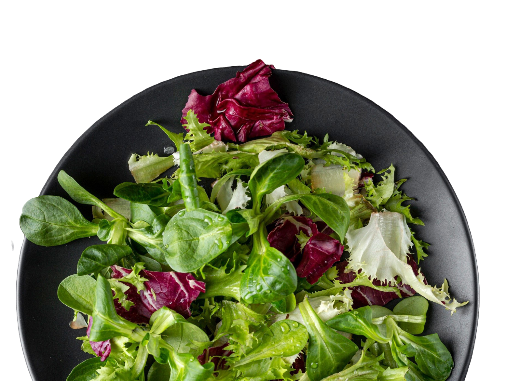

Nada melhor do que unir sabor, frescor e saúde em um único prato. As saladas são uma explosão de cores e texturas que transformam qualquer refeição em uma experiência especial. Seja você um amante da culinária saudável ou alguém em busca de praticidade, aqui você encontrará receitas que atendem a todos os gostos.


NOSSA HISTÓRIA
Olá, eu sou a Bruna, estudante de ciência da computação na PUC Minas e desenvolvedora do Salad Days, e quero compartilhar com vocês a jornada que me levou a criar esse site de receitas de saladas.
Confesso que a proposta inicial ao desenvolver essa aplicação web era fazer um blog, entretanto, acredito que a melhor maneira de conhecer alguém é conhecendo mais sobre seus gostos, por isso o Salad Days, criado por alguém que ama saladas e queria compartilhar.
Nosso objetivo não é só compartilhar receitas, mas também incentivar um estilo de vida saudável de forma prática.

GUIA
Eat Your Salad
Bem-vindo ao "GUIA Eat Your Salad", o espaço perfeito para quem deseja aprimorar suas habilidades no preparo de saladas deliciosas, saudáveis e práticas. Aqui, você encontrará uma coleção de posts repletos de dicas valiosas para transformar sua experiência com saladas em algo simples e prazeroso.